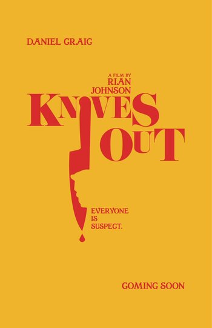

Knives Out is a mystery movie that centers around the death of an old man, Harlan Thrombey. At first his death seems like a suicide, but in a flashback, it is revealed that his registered nurse, Marta Cabrera, seemingly switched two of the vials of medicine accidentally, which would end in Harlan’s death, so he tried to cover up his own death as a suicide. The movie finally reveals that one of his grandsons, Ransom Drysdale, (a character who the movie has made you grow to trust) actually switched the medicine inside the vials, so when Marta switched them back, she actually saved Harlan, therefore his death was truly a suicide. The movie reveals clues in a sort of reverse way that makes it so when you finally find out the truth, it seems so obvious, like you should have figured it out earlier, but you were blinded by what you thought was the answer. This is what makes Knives Out such a masterpiece.

The poster reads, "Everyone is suspect", showing how you can't trust Ransom even if he seems trustworthy.
This poster reads, "I suspect foul play. I have eliminated no suspects", which is a quote that Detective Blanc said in the movie. This shows how he knew Marta and Ransom both had something to do with the murder.